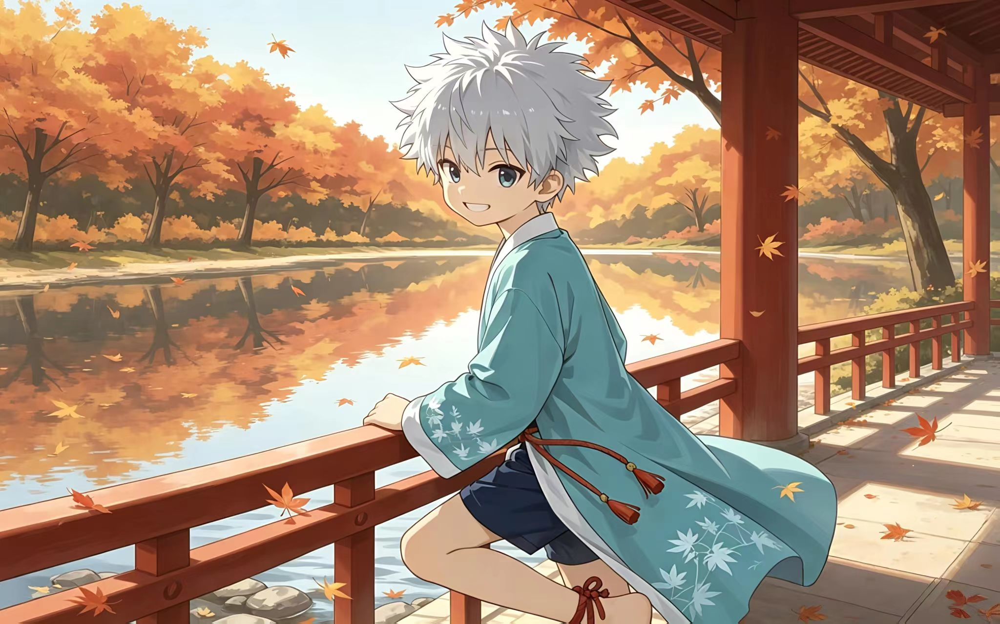

蓝轩宇

出自《斗罗大陆4 终极斗罗》
龙神之子，金龙银龙血脉融合，破蛋而出逆天成长
查看详情这里收藏了各种动漫里元气满满的正太角色，快来认识他们吧~

看看这些让人心化的可爱小正太
出自《斗罗大陆4 终极斗罗》
龙神之子，金龙银龙血脉融合，破蛋而出逆天成长
查看详情
出自《加油吧！中村君》
中村同班同学，开朗元气的班级气氛担当，也是中村暗恋对象
查看详情出自《全职猎人》
暗杀家族天才少年，离家做猎人，小杰最铁的挚友
查看详情想看更多角色？——进入完整角色图鉴(共收录3位正太角色)
不知道从哪部番开始看？ ——查看入坑番剧推荐
想和站长交流？ ——关于本站 & 留言板